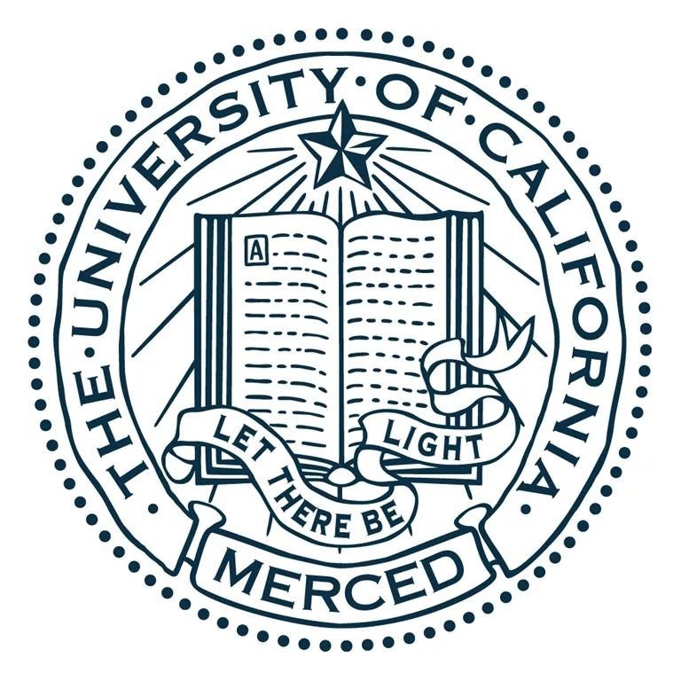

|
Yuanze Lin I am a PhD student in the Computer Science Department at the University of Oxford, where I work with Prof. Ronald Clark and Prof. Philip Torr. My research focuses on diffusion and vision-language models. Before going to Oxford, I had a great time at Microsoft Redmond, MSR Asia, CCVL @ Johns Hopkins University, Alibaba, etc. I appreciate collaborating with distinguished professors and researchers from these institutions. My research interest lies in machine learning and its applications, especially: • Multimodal large language models (MLLMs) • Image/Video generation and editing based on diffusion models • The applicability of large language models (LLMs) yuanze.lin [at] cs.ox.ac.uk / Google Scholar / GitHub / LinkedIn |
{kind=link}
News[06/2025] We introduced IllumiCraft for high-fidelity video relighting. [04/2025] Olympus was selected as a Highlight at CVPR 2025! [03/2025] Released the code of Olympus (CVPR 2025) for vision tasks. [02/2025] Olympus accepted to CVPR 2025. [12/2024] We presented Olympus to solve over 20 different computer vision tasks. [08/2024] Released the code of Learnable Regions (CVPR2024) for image editing. [07/2024] Rethinking Visual Prompting for MLLMs with External Knowledge was presented. [03/2024] Check out DreamPolisher for high-quality text-to-3D generation! [02/2024] Started a research internship at GenAI @ Microsoft. [02/2024] Text-Driven Image Editing via Learnable Regions accepted to CVPR 2024. [10/2023] Started my PhD journey at CS @ University of Oxford. [07/2023] SMAUG accepted to ICCV 2023. [09/2022] REVIVE accepted to NeurIPS 2022. [03/2022] Pseudo-Q and AdaFocus V2 accepted to CVPR 2022. [07/2021] MCN accepted to ICCV 2021. [06/2021] EVA-GCN accepted to CVPR 2021 AMFG Workshop and won Best Paper Award! |
Selected PublicationsPapers are sorted by recency, * denotes equal contribution. |
|
IllumiCraft: Unified Geometry and Illumination Diffusion for Controllable Video Generation
Yuanze Lin, Yi-Wen Chen, Yi-Hsuan Tsai, Ronald Clark, Ming-Hsuan Yang Arxiv, 2025 ArXiv / Project Page / Video / Code / BibTeX We present IllumiCraft, a unified framework that unifies geometry and illumination diffusion for controllable video generation. |
|
Olympus: A Universal Task Router for Computer Vision Tasks
Yuanze Lin, Yunsheng Li, Dongdong Chen, Weijian Xu, Ronald Clark, Philip H.S. Torr CVPR, 2025 (Highlight) ArXiv / Project Page / Video / Code / BibTeX We introduce Olympus, a new approach that transforms Multimodal Large Language Models (MLLMs) into a unified framework capable of handling a wide array of computer vision tasks. |
|

|
Text-Driven Image Editing via Learnable Regions
Yuanze Lin, Yi-Wen Chen, Yi-Hsuan Tsai, Lu Jiang, Ming-Hsuan Yang CVPR, 2024 ArXiv / Project Page / Video / Code / BibTeX Introduce a region-based editing network that is trained to generate editing regions utilizing a text-driven editing loss with CLIP guidance, our method can edit the given images based on freely provided language descriptions. |
|
SMAUG: Sparse Masked Autoencoder for Efficient Video-Language Pre-training
Yuanze Lin, Chen Wei, Huiyu Wang, Alan Yuille, Cihang Xie ICCV, 2023 ArXiv / Poster / Slides / BibTeX Propose an efficient video-language pre-training framework, which enjoys both competitive performances on text-to-video retrieval and video question answering tasks, and much less pre-training costs by 1.9X or more. |
|

|
REVIVE: Regional Visual Representation Matters in Knowledge-Based Visual Question Answering
Yuanze Lin, Yujia Xie, Dongdong Chen, Yichong Xu, Chenguang Zhu, Lu Yuan NeurIPS, 2022 ArXiv / Poster / Supplementary Material / OpenReview / Code / BibTeX Propose a new knowledge-based VQA method REVIVE, which utilizes the explicit information of object regions not only in the knowledge retrieval stage but also in the answering model. It achieves a new state-of-the-art performance on OK-VQA dataset. |

|
Pseudo-Q: Generating Pseudo Language Queries for Visual Grounding
Haojun Jiang*, Yuanze Lin*, Dongchen Han, Shiji Song, Gao Huang CVPR, 2022 ArXiv / Poster / Code / BibTeX Present Pseudo-Q to automatically generate pseudo language queries for supervised training, which achieves superior or comparable performance compared to existing weakly-supervised visual grounding methods on five datasets. |

|
AdaFocus V2: End-to-End Training of Spatial Dynamic Networks for Video Recognition
Yulin Wang*, Yang Yue*, Yuanze Lin, Haojun Jiang, Zihang Lai, Victor Kulikov, Nikita Orlov, Humphrey Shi, Gao Huang CVPR, 2022 ArXiv / Code / BibTeX Reformulate AdaFocus as a simple one-stage algorithm by introducing a differentiable interpolation-based patch selection operation and further present an improved training scheme. Extensive experiments on six benchmark datasets demonstrate its effectiveness. |

|
Self-supervised video representation learning with meta-contrastive network
Yuanze Lin, Xun Guo, Yan Lu ICCV, 2021 ArXiv / Poster / BibTeX Propose a Meta-Contrastive Network (MCN), which combines contrastive learning and meta learning for pre-training. For video action recognition and video retrieval tasks, MCN outperforms state-of-the-art approaches on UCF101 and HMDB51 datasets. |

|
EVA-GCN: Head Pose Estimation Based on Graph Convolutional Networks
Miao Xin, Shentong Mo, Yuanze Lin CVPR AMFG Workshop, 2021 (Best Paper Award) Paper / Code / BibTeX Construct a landmark-connection graph, and propose to leverage the Graph Convolutional Networks (GCN) to model the complex nonlinear mappings between the graph typologies and the head pose angles. |
{kind=link}
{kind=link}
|
|
GenAI @ Microsoft Redmond
Researcher Intern, Feb 2024 - Nov 2024 hosted by Dr. Dongdong Chen, working on multimodal large language models (MLLMs). | |
|  |
Vision and Learning Lab @ UC Merced
Visiting Student, May 2022 - Nov 2023 hosted by Prof. Ming-Hsuan Yang, working on text-driven image editing. |
|
|
Alibaba Group
Senior Algorithm Engineer, Feb 2023 - Aug 2023 Working on vision-language pre-training, fine-tuning, and the applicability of large language models (LLMs). |
|
|
CCVL @ Johns Hopkins University
Research Assistant, May 2022 - Feb 2023 with Prof. Cihang Xie and Prof. Alan Yuille, working on vision-language pre-training based on MAE. |
|
Microsoft Redmond Researcher Intern, Feb 2022 - June 2022 with Dr. Yujia Xie, Dr. Dongdong Chen and Dr. Yichong Xu, working on knowledge-based VQA. | |
| |
Microsoft Research Asia Researcher Intern, Dec 2020 - Sep 2021 with Dr. Xun Guo and Dr. Yan Lu, working on self-supervised learning and transformers for video tasks. |
| |
Tencent AI Lab Researcher Intern, Sep 2020 - Dec 2020 with Dr. Haozhi Huang, working on text-driven editing of videos based on meta learning. |
Professional ServicesProgram Comittee: AAAI 2025 Journal Reviewer: IJCV 2025 Conference Reviewer: ICLR 2025, AISTATS 2025, CVPR 2025, ICML 2025, ICCV 2025, NeurIPS 2025 Conference Reviewer: ICRA 2024, CVPR 2024, ECCV 2024, NeurIPS 2024 Conference Reviewer: ICLR 2023, CVPR 2023, ICCV 2023, NeurIPS 2023 Conference Reviewer: CVPR 2022 |
|
No web trackers, feel free to see this website Last Update: 04/2025 Template |